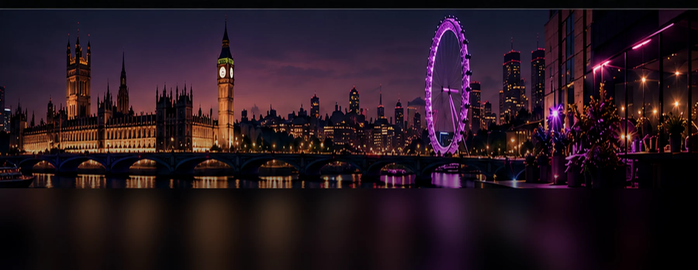

CORE MUSIC LONDON / ROSTER & WORLDS
Our Artists &
Sound Worlds.
Four distinctive starting points under CORE MUSIC LONDON: alternative R&B / electronic anthems (CORE), atmospheric Istanbul poetry (khrysaor), Ankara celebration (ANGARALI KEREMSİ), and cinematic film scoring (SUSSUZ SOUNDTRACK).

ARTIST • ALTERNATIVE R&B · ELECTRONIC CORE Debut Album: "KISS ME WRONG" · Submitted to DSPs ARTIST • NOCTURNAL / ATMOSPHERIC
khrysaor
Albums: "Low Battery" & "SUSSUZ Soundtrack"
ARTIST • NOCTURNAL / ATMOSPHERIC
khrysaor
Albums: "Low Battery" & "SUSSUZ Soundtrack"
 ARTIST • ANKARA / CELEBRATION
ANGARALI KEREMSİ
Album: "Düğün Dernek"
ARTIST • ANKARA / CELEBRATION
ANGARALI KEREMSİ
Album: "Düğün Dernek"
 SOUNDTRACK • CINEMATIC / NARRATIVE
SUSSUZ SOUNDTRACK
Composed & Produced by khrysaor
SOUNDTRACK • CINEMATIC / NARRATIVE
SUSSUZ SOUNDTRACK
Composed & Produced by khrysaor